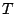

An algebraic multigrid preconditioner for a class of
singular M-matrices
Elena Virnick
Institut fur Mathematik
Technische Universitat Berlin
virnik@math.tu-berlin.de
We will consider the problem of the computation of stationary
distributions of Markov chains which arises in many different
application areas. These range from the distribution of drugs
in the blood circulation systems to the Page Rank computed by
Google. The task is to compute the left eigenvector
corresponding to the largest eigenvalue of the transition
matrix  or alternatively solve the linear system
where the matrix  is a singular
is a singular  -matrix.
In applications, these matrices are large and sparse.
Therefore, iterative methods such as GMRES are applied.
However, the applicability of GMRES depends on whether
it is possible to find a suitable preconditioner.
For non-singular, symmetric positive definite M-matrices
that are obtained from discretisations of boundary
value problems the algebraic multigrid is well known
to be a good preconditioner. We show how it is possible
to apply the algebraic multigrid method to our special
case of singular non-symmetric -matrices and show
numerical examples that illustrate that this leads to
significant acceleration of the convergence speed.
-matrix.
In applications, these matrices are large and sparse.
Therefore, iterative methods such as GMRES are applied.
However, the applicability of GMRES depends on whether
it is possible to find a suitable preconditioner.
For non-singular, symmetric positive definite M-matrices
that are obtained from discretisations of boundary
value problems the algebraic multigrid is well known
to be a good preconditioner. We show how it is possible
to apply the algebraic multigrid method to our special
case of singular non-symmetric -matrices and show
numerical examples that illustrate that this leads to
significant acceleration of the convergence speed.